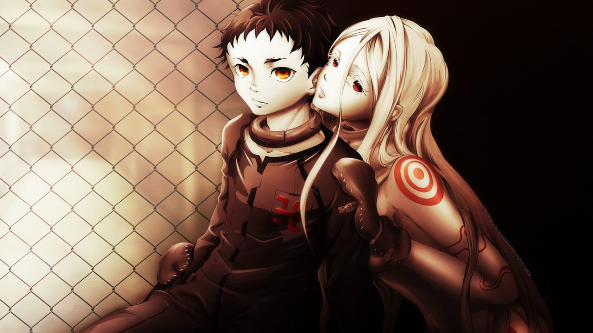

Deadman Wonderland
Sinopse
Dez anos se passaram desde o Grande Terremoto de Tokyo, um enorme desastre natural que afundou mais de 70 por cento de Tóquio no oceano. Ganta Igarashi é um ordinário 14 anos estudante do ensino médio, cuja vida muda quando um dia um homem misterioso aparece coberto de sangue e mata todos os seus colegas de classe, deixando-o vivo após encaixar um cristal vermelho em seu peito. Ganta é condenado pelo massacre e condenado à prisão perpétua em Deadman Wonderland.
Status: Completo
Autor: Kataoka Jinsei e Kondou Kazuma
Arte: Kataoka Jinsei e Kondou Kazuma
Ano: 2007
Volume 1
- Capítulo 1 - Quem matou Cock Robin?
- Capítulo 2 - Regra da regra
- Capítulo 3 - Feliz corrida para a Morte
- Capítulo 4 - ESCRAVO DO ASSASSINO
Volume 2
- Capítulo 5 - MÁQUINA MORTÍFERA
- Capítulo 6 - Garganta do Corvo
- Capítulo 7 - FESTIVAL DE CADÁVERES
- Capítulo 8 - Majestade Sedenta de Sangue
Volume 3
- Capítulo 9 - Flor Mentirosa
- Capítulo 10 - bingo super MAU
- Capítulo 11 - Tempo Passado, Fim Apertado
- Capítulo 12 - Corrente Ferida
Volume 4
- Capítulo 13 - Nublado Depois Ensolarado
- Capítulo 14 - TOQUE O SINO DELA
- Capítulo 15 - Homem é o Arquiinimigo do homem
- Capítulo 16 - Biscoitos Salgados
Volume 5
- Capítulo 17 - RESPOSTA DO PERDEDOR
- Capítulo 18 - Gangue Corrente
- Capítulo 19 - Dia chuvoso sangrento
- Capítulo 20 - Nirvana do Alívio
- Capítulo 21 - Fantasma no Sol
Volume 6
- Capítulo 22 - Língua e todos os dias
- Capítulo 23 - O ROSTO FALSO
- Capítulo 24 - Canção Raivosa, Sob Paz
- Capítulo 25 - Queimando Fracasso
- Capítulo 26 - CÉU AZUL com DEMÔNIOS AZUIS
Volume 7
- Capítulo 27 - Tudo bem a noite Toda
- Capítulo 28 - Máscara ou Mente
- Capítulo 29 - Nunca diga nunca de novo
- Capítulo 30 - Estúpido Estupendo I
- Capítulo 31 - Estúpido Estupendo II
Volume 8
- Capítulo 32 - Cão-come-cão
- Capítulo 33 - Radiante beleza-fodona
- Capítulo 34 - Fogo Nu
- Capítulo 35 - Dado com Morte
- Capítulo 36 - TCHAU TCHAU QUERIDO
Volume 9
- Capítulo 37 - Punho Feroz
- Capítulo 38 - JOGO FINAL - UMA CHAMA
- Capítulo 39 - Desespero Despótico
- Capítulo 40 - O Começo Do fim
Volume 10
- Capítulo 41 - Liberdade ou Martírio
- Capítulo 42 - Mate minha Vontade
- Capítulo 43 - CENTRO DA TEMPESTADE
- Capítulo 44 - Confrontado com o destino
Volume 11
- Capítulo 45 - Passado a Paixão
- Capítulo 46 - Golpe Perverso
- Capítulo 47 - Cante um Pecado
- Capítulo 48 - flor Abortiva na Superfície
- Capítulo 49 - Cara a Cara
- Capítulo 50 - Confiança na Arma & Cidade de Brinquedo
- Capítulo 51 - Morrer em um Diamante
- Capítulo 52 - Absurdo desfigurado